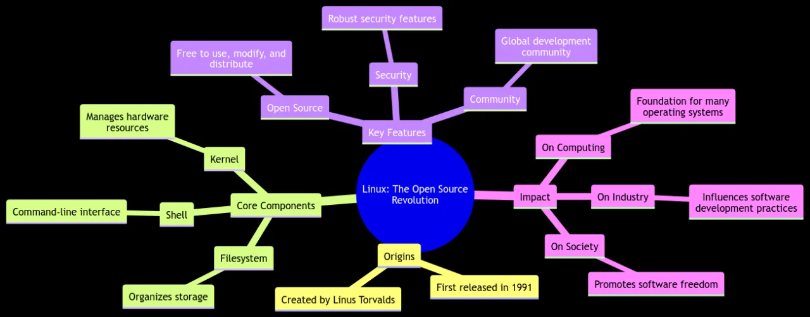

Presentation Assignment Overview
The Story of Linux Kernel & Linus Torvalds

The story of Linux begins in the early 1990s

“Hello everybody out there using minix. I’m doing a (free) operating system (just a hobby, won’t be big and professional like gnu) for 386(486) AT clones. This has been brewing since april, and is starting to get ready. I’d like any feedback on things people like/dislike in minix, as my OS resembles it somewhat (same physical layout of the file-system (due to practical reasons) among other things). I’ve currently ported bash(1.08) and gcc(1.40), and things seem to work. This implies that I’ll get something practical within a few months, and I’d like to know what features most people would want. Any suggestions are welcome, but I won’t promise I’ll implement them ???? P.S. Yes – it’s free of any minix code, and has a multi-threaded fs. It is NOT protable [portable] (uses 386 task switching etc), and it probably never will support anything other than AT-harddisks, as that’s all I have :-(.“
Open Source Revolution
Evolution of the Linux Kernel
The Rise of Distributions
“Distros”

Linux in the Enterprise


Linux on the Desktop